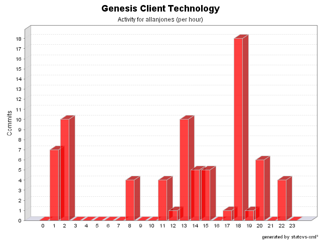

|
|
Login: allanjones
Fullname: allanjones
Revisions: 76
Lines of Code: 1180
Added Lines of Code: 1646
Lines of Code per Change: 15,5
|

| Date | Author | File/Message |
|---|---|---|
| 07/11/04 20:44 | allanjones |
Issue #46.
Annotations renamed.
@PreAction -> @BeforeAction
@PosAction -> @AfterAction
(1 Files changed,
10 Lines changed)
src/net/java/dev/genesis/ui/thinlet/metadata/ThinletMetadata.java 1.5
(+10
-10)
|
| 02/11/04 02:40 | allanjones |
Validator rules can be extended... so it can´t be fixed.
(2 Files changed,
98 Lines changed)
src/validator-rules.xml 1.4
removed
src/validator-rules.xml.sample 1.1
added 98
|
| 02/11/04 02:36 | allanjones |
Removed portuguese messages.
(5 Files changed,
17 Lines changed)
src/error_reporter.xml 1.2
(+2
-2)
src/net/java/dev/genesis/ui/thinlet/BaseThinlet.java 1.13
(+4
-2)
src/messages.properties.sample 1.5
(+7
-1)
src/option.xml 1.2
(+3
-3)
src/message.xml 1.2
(+1
-1)
|
| 29/10/04 15:09 | allanjones |
Issue #64. Unit tests for validateBigDecimal and validateBigDecimalRange created. Some other minor changes.
(3 Files changed,
14 Lines changed)
src/validator-rules.xml 1.3
(+11
-1)
src/messages.properties.sample 1.4
(+2
-0)
src/net/java/dev/genesis/ui/BasicValidator.java 1.5
(+1
-0)
|
| 29/10/04 15:07 | allanjones |
Removed unused imports.
(2 Files changed,
0 Lines changed)
src/net/java/dev/genesis/resolvers/DefaultEmptyResolver.java 1.4
(+0
-2)
src/net/java/dev/genesis/ui/Form.java 1.4
(+0
-1)
|
| 24/10/04 14:49 | allanjones |
Removed portuguese messages. Minor change in NoopCommand
(2 Files changed,
7 Lines changed)
src/net/java/dev/genesis/ui/thinlet/BaseThinlet.java 1.10
(+5
-5)
src/messages.properties.sample 1.3
(+2
-0)
|
| 22/10/04 20:34 | allanjones |
Minor bug found when fixing issue #50.
(1 Files changed,
1 Lines changed)
src/net/java/dev/genesis/ui/thinlet/ThinletBinder.java 1.12
(+1
-1)
|
| 22/10/04 18:21 | allanjones |
Issue #54. Fixed. The method action(String) in BaseThinlet was renamed to invokeFormAction(String)
(1 Files changed,
3 Lines changed)
src/net/java/dev/genesis/ui/thinlet/BaseThinlet.java 1.8
(+3
-3)
|
| 22/10/04 18:17 | allanjones |
Issue #50. Every time we call a data provider, the selected fields are reset to null.
(2 Files changed,
37 Lines changed)
src/net/java/dev/genesis/ui/thinlet/ThinletBinder.java 1.11
(+7
-2)
src/net/java/dev/genesis/ui/metadata/DataProviderMetadata.java 1.5
(+30
-3)
|
| 22/10/04 18:14 | allanjones |
Issue #48. Fixed
(1 Files changed,
6 Lines changed)
src/net/java/dev/genesis/ui/thinlet/BaseThinlet.java 1.7
(+6
-2)
|